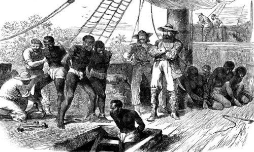

Como os negros foram trazidos para o Brasil?
"Os escravizados africanos eram trazidos para o Brasil por meio do tráfico negreiro.
Esse comércio de compra deles se iniciou no século XV, quando os portugueses começaram a ter
contato com diferentes povos africanos. Esse contato, naturalmente, estabeleceu-se em vias
comerciais,
e uma das mercadorias incluídas nos negócios eram esses trabalhadores."
As historiadoras Lilia Schwarcz e Heloisa Starling afirmam que os primeiros contatos
comerciais
entre europeus e africanos fizeram com que a escravização de africanos já se popularizasse
na
península Ibérica. Elas apontam para o fato de que, no século XVI, Lisboa e Sevilla eram,
cidades
que possuíam populações expressivas de africanos escravizados. Nesses locais, eles se dedicavam
aos trabalhos domésticos.
Os africanos escravizados eram obtidos pelos traficantes por meio de emboscadas realizadas
no
interior do continente africano ou também por meio da venda direta, caso o escravo fosse
um
prisioneiro de guerra ou alguém vendido para a escravização como punição por algum delito, como
roubo ou adultério.